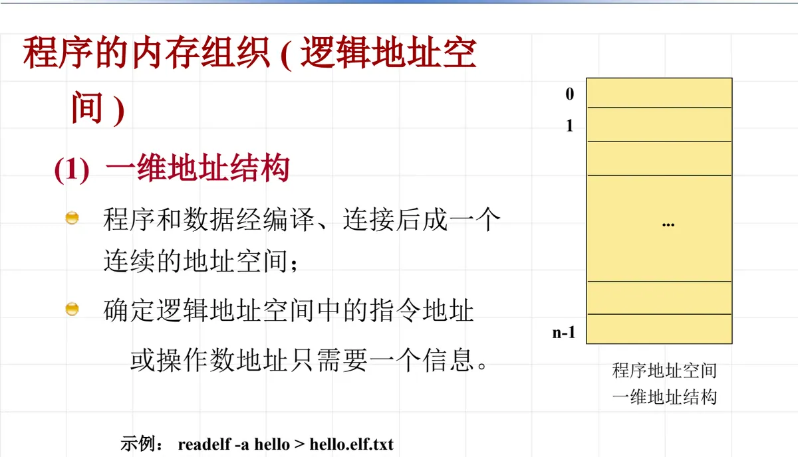
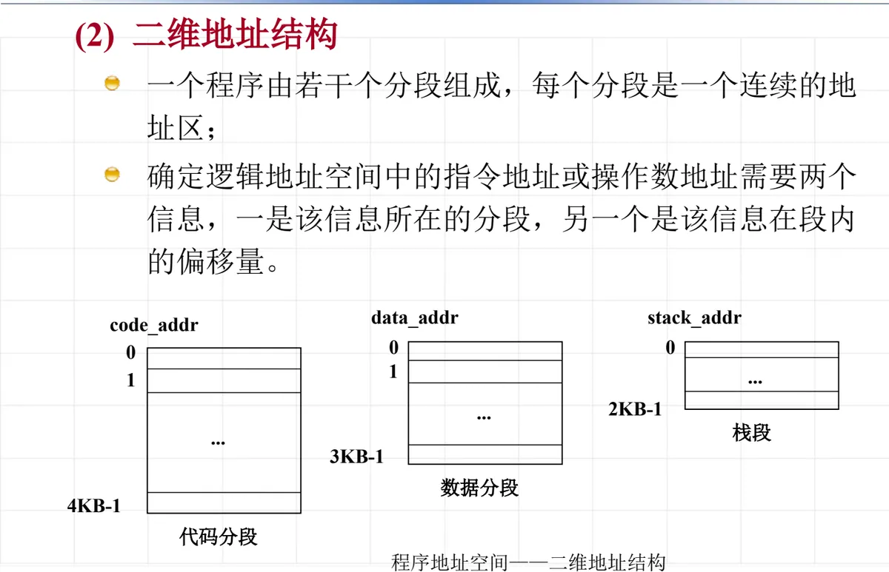
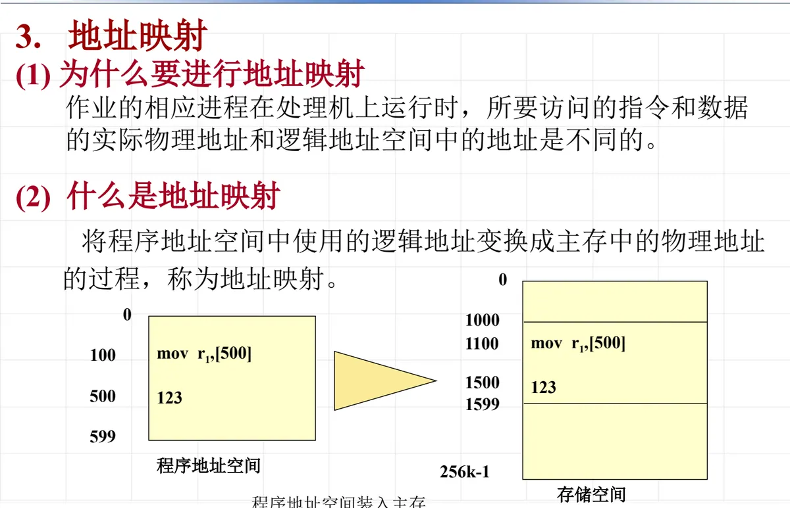
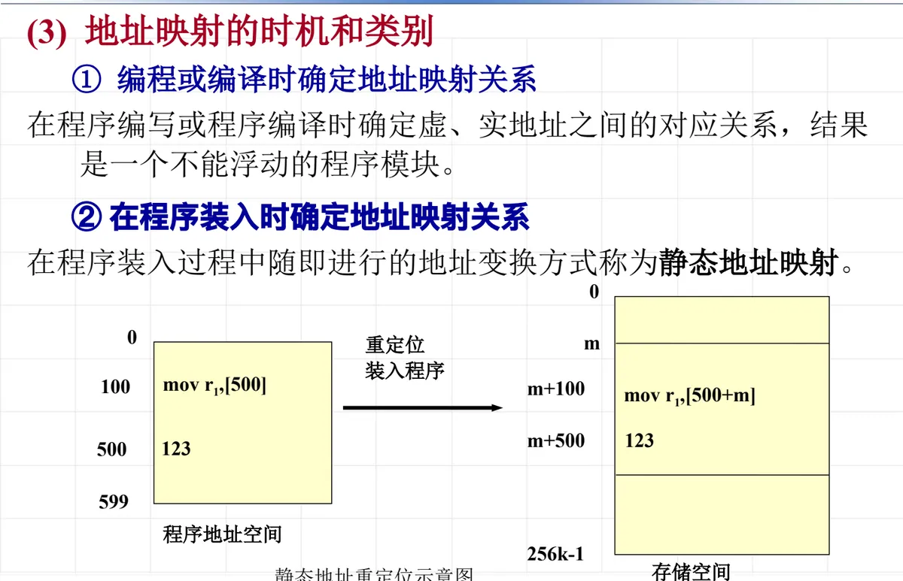
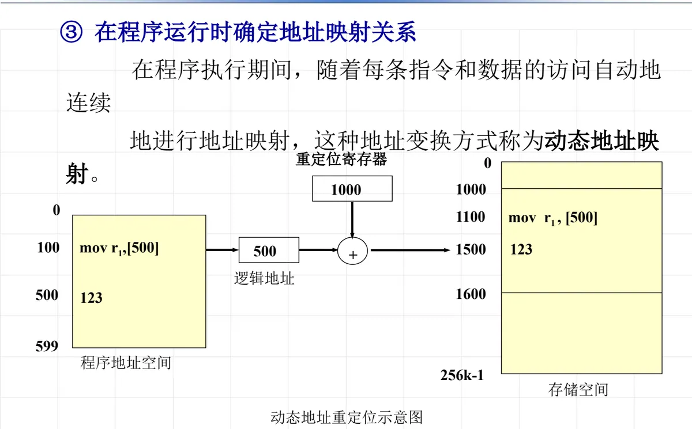
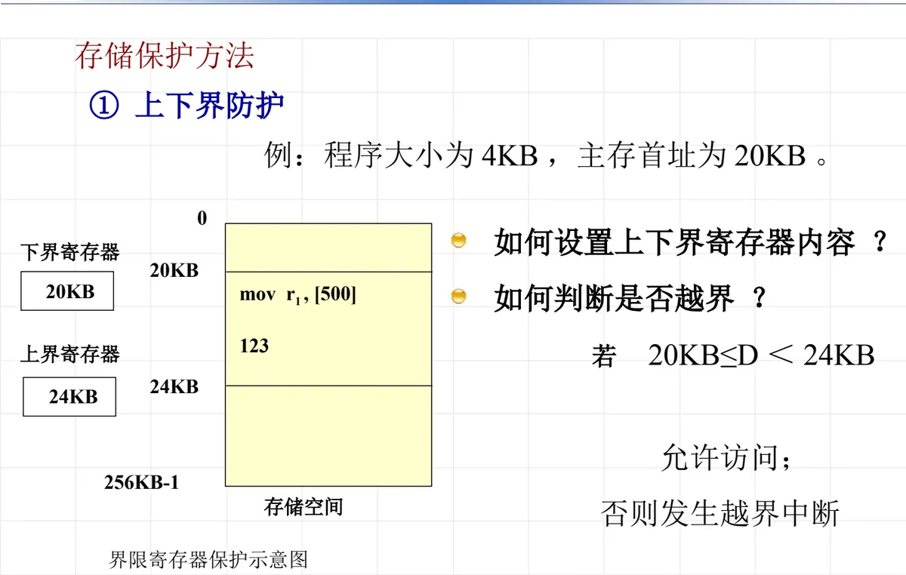
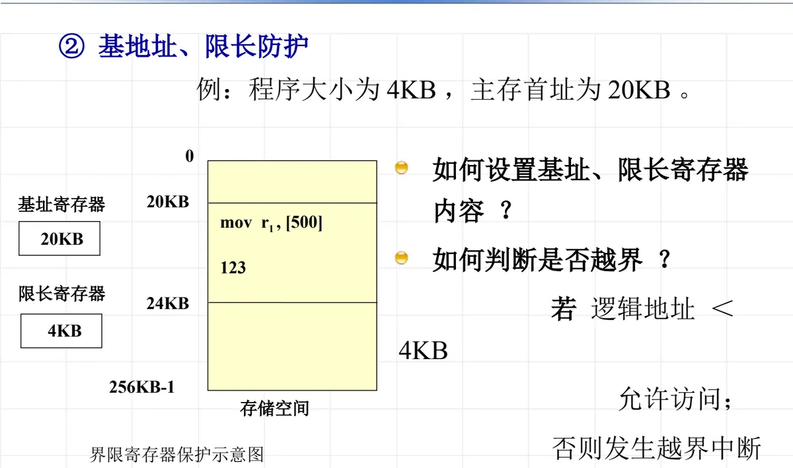
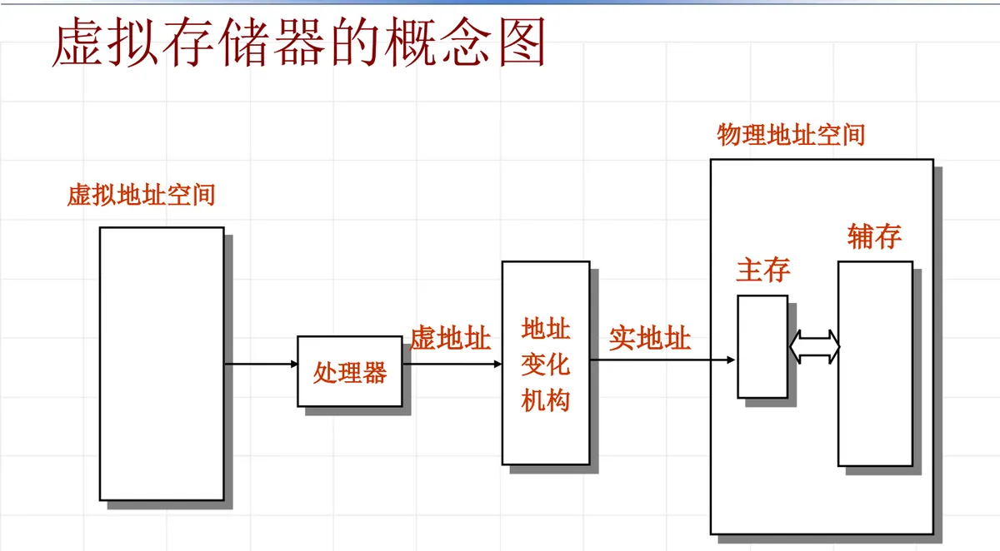
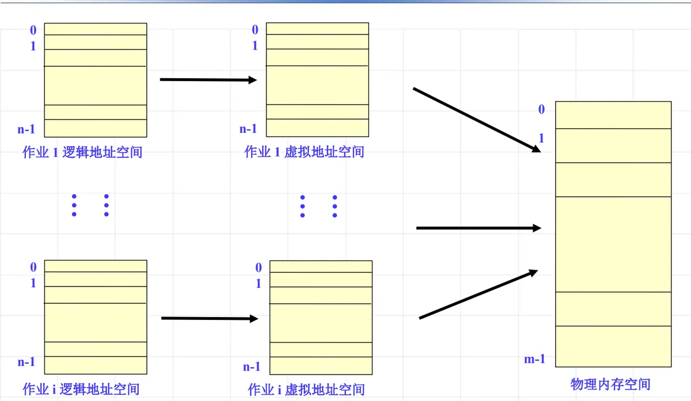

操作系统原理 · 第 7 章 主存管理
7.2 主存管理的功能
上一节把主存管理要干的事归纳为地址映射、主存分配、主存保护和主存扩充四项，这一节就把这四项逐一讲清楚。要理解它们，先得分清物理地址与逻辑地址这两个世界，再看程序在内存里究竟按什么结构组织起来；随后依次讨论地址映射的时机与方式、存储保护的两种做法，以及用虚拟存储器扩充主存的思路。
1. 几个基本概念
先把四个最基本的名词摆清楚，它们是后面全部内容的共同语言。第一个是物理地址，又叫实地址：它是计算机主存单元的真实地址，也就是内存中某个存储单元的实际编号，CPU 送到地址总线上、最终用来选中某个单元的就是它。所有物理地址合在一起所对应的空间，组成主存空间——主存空间的边界由主存的实际容量决定。
与它相对的是逻辑地址：用户程序的程序地址，无论是指令地址还是操作数地址，都是逻辑地址。它们由编程、编译和连接的过程产生，写程序的人和编译程序关心的只是「第几条指令」「第几个变量」，而不是这些内容最终落在哪一块内存里。用户程序所有逻辑地址的集合所对应的空间，称为程序地址空间，也叫逻辑地址空间。
两套地址的区别，正是后面所有机制得以成立的前提：程序始终在逻辑地址空间里活动，而它真正运行时访问的是主存空间，主存管理要做的就是在这两个空间之间建立并维护对应关系。
2. 程序的内存组织：一维地址结构与二维地址结构
逻辑地址空间在程序眼里是什么形状，直接决定了地址该怎样表示、又该怎样变换成物理地址。常见的组织方式有两种：一维地址结构和二维地址结构。
（1）一维地址结构
程序和数据经编译、连接之后，形成一个连续的地址空间，编址从 0 开始一直排到 n-1。在这种结构下，确定逻辑地址空间中的指令地址或操作数地址只需要一个信息——一个落在 0 到 n-1 之间的序号就够了，所谓「地址」就是这个序号。地址空间是一维的、平坦的，找任何一条指令或一个数据都只凭这一个数。
可执行文件内部是不是这样排布的，可以用工具直接把它的结构读出来看，例如：
readelf -a hello > hello.elf.txt导出的内容里能查到代码段、数据段各自被安排在哪个地址区间，这也正是一维结构「一个连续空间」的含义。

（2）二维地址结构
另一种组织方式把程序空间切成若干段，地址表示成「段号 + 段内偏移」两项。下图把程序地址空间分成栈段、数据分段和代码分段：每一段都从 0 开始独立编址，栈段占 0 到 2KB-1，数据分段占 0 到 3KB-1，代码分段占 0 到 4KB-1，段与段之间互不干扰，各自的大小也可以不同。

因此二维结构的定位要分两步走：先用段号找到这一段的起始位置，再加上段内偏移。与一维结构「一个信息即可定位」相比，代价是寻址时要同时给出两项信息，地址变换也多了一次由段号到段基址的换算；换来的收益，则在下面几点上体现出来。
（3）二维结构的实例：x86 实模式下的内存管理
二维地址结构并不抽象，8086 处理器的实模式就是它的一个典型实现。实模式下的内存寻址空间是 1MB，因为地址总线有 20 根，能表示 2 的 20 次方即 1MB 的范围；而段寄存器只有 16 位，单靠它凑不出这么多地址，硬件于是采用了两项相加的寻址方式：
物理地址 = (段寄存器 << 4) + 偏移值这里的段寄存器是 16 位，一共四个：CS、DS、SS、ES，分别指向代码段、数据段、堆栈段和附加段；偏移值同样来自 16 位的通用寄存器，如 DI、SI、BP、SP。段寄存器左移 4 位相当于乘以 16，得到一个 20 位的段基址，再加上 16 位的偏移值，就得到送到地址总线上的物理地址。段号与偏移分开存放、各管一段，正是二维地址结构在硬件上的落地方式。
（4）二维地址结构的优点
把地址分成段，好处有三点：一是符合人们的习惯，程序的代码段、数据段、栈段本来在逻辑上就是分开的，接口、全局数据、局部数据各归其位，描述和阅读都很自然；二是不同的段可以实现不同的保护，例如代码段只读、数据段可读可写，保护的单位正好落在语义单位上；三是可以实现动态链接，按需要调用分段，用到哪一段再把哪一段接进来，不必在程序启动时就把所有模块都定位好。这三点也是段式存储管理在后续章节里反复被提起的原因。
3. 主存管理的四项功能
概念理清之后，主存管理要做的事可以列成四项：
- 地址映射：把程序使用的逻辑地址转换成主存中的物理地址，也就是建立逻辑地址到物理主存的对应关系；
- 主存分配：决定哪个程序占哪一块主存、占多大，以及什么时候回收；
- 主存保护：保证每道程序只能在分给它的存储区域内活动，彼此互不干扰；
- 主存扩充：借助辅存，让用户觉得自己可用的主存比实际主存大得多。
这四项不是四件互不相干的小事，而是一条首尾相接的链路：分配决定程序能落在哪里，映射负责把逻辑地址对上去，保护守着这块区域不被越界访问，扩充则让这块区域不必容纳整个程序。下面按这条链路的顺序展开。
4. 地址映射：从逻辑地址到物理地址
先看地址映射为什么必要。CPU 每执行一条访存指令，最终都要通过地址总线给出物理地址去访问主存；而指令里写的、程序里用的全是逻辑地址。程序地址空间被装入主存之后，同一个逻辑地址落在哪块物理单元上，完全取决于它这次被装到了什么位置。
下图给了一个最直观的例子。程序地址空间是 0 到 256KB-1 的连续区域，其中的代码与数据按逻辑地址排布；装入时程序被放在以 1000 为起始地址的主存区，于是逻辑地址 100、500 处的数据分别落到了物理地址 1100 和 1500 处。可是指令本身仍然是 mov r1,[500]——如果照着它直接去访问物理地址 500，取到的就不是原来那个数据。

地址映射（也叫地址重定位）要解决的正是这个问题：把一个逻辑地址变换成它此刻真正对应的物理地址。这个变换在什么时候做、由谁来做，决定了整套存储管理能有多灵活，于是就有了下面三种时机和类别。
5. 地址映射的时机和类别
按照映射关系在什么时候确定下来，地址映射分成三类：编程或编译时确定、装入时确定（静态地址映射）、运行时确定（动态地址映射）。三者一次比一次晚，也一次比一次灵活。
（1）编程或编译时确定地址映射关系
最早的做法是在编程或编译阶段就把地址关系定死：程序打算放在内存的哪一块，事先已经约定，编译程序据此生成指令地址和操作数地址，程序装入时不需要再做任何变换。这种方式实现最简单，但对运行环境的要求太苛刻——一旦要换一个位置存放，就必须重新编译；在多道程序并发执行的环境里，几乎无法适应。
（2）装入时确定：静态地址映射
第二种做法把变换放到程序装入主存的那一刻，一次做完。程序里的地址仍然是逻辑地址，由装入程序负责把每个逻辑地址统一加上一个偏移量 m，改写成物理地址后再放进内存，这个过程叫重定位，因为它改变的是地址的基准位置。下图就是这样一次重定位：逻辑地址 100 的数据被放到 m+100，逻辑地址 500 的数据被放到 m+500，指令中表示地址的部分也一并改写，相当于把 [500] 变成 [500+m]。

静态映射的优点是变换只做一次，程序运行期间不必再为地址操心，执行效率高；代价是装入位置一旦确定就不能再动。程序在内存中不能移动，必须占用一整块连续的主存区域，而且只有全部装入之后才能开始运行——因为地址已经被写死在指令里了。
（3）运行时确定：动态地址映射
第三种做法把变换推迟到程序真正访问内存的每一刻。程序装入时保持逻辑地址不变，系统只把该程序所占区域的起始地址（基址）记入一个重定位寄存器；此后 CPU 每次访存，都由硬件把逻辑地址与重定位寄存器中的值相加，得到物理地址再送给主存。下图里，重定位寄存器中存放的是 1000，逻辑地址 500 经过相加得到物理地址 1500，取到的才是数据 123。

这个过程由硬件自动完成，变换速度快，又因为对应关系是每次访存时现算的，灵活性远高于静态映射。程序换一个位置装入，只要改一改重定位寄存器的值，指令一个字都不用动。
6. 动态地址映射的能力，以及两种映射的区别
（1）动态地址映射带来的五项能力
正因为变换在运行时进行、由硬件自动完成，动态地址映射能满足以下五个目标：
- （1）具有给一个用户程序任意分配内存区的能力；
- （2）改变内存地址时，不需要修改用户程序；
- （3）具有重新分配的能力；
- （4）具有以间断方式分配主存的能力；
- （5）具有只装入部分代码即可运行的能力。
前三条解决的是「程序能不能被挪动、能不能被重新安排」，后两条则直接为主存扩充铺路：可以间断分配、可以只装入一部分代码，才谈得上把暂时用不到的内容留在辅存。后面讲的分区、页式、段式等各种存储管理方式，实际上都是在这些能力之上继续做文章。
（2）静态映射与动态映射的区别
把两者放在一起对照，差别集中在地址变换的时机与执行者，以及由此带来的分配方式上：
| 比较项 | 静态地址映射 | 动态地址映射 |
|---|---|---|
| 地址变换时机 | 程序装入主存时一次完成 | 程序运行时，每次访问内存时进行 |
| 变换由谁完成 | 装入程序，属于软件处理 | 重定位寄存器等硬件机构 |
| 程序能否移动 | 不能移动，装入位置即固定 | 可以移动，改重定位寄存器的值即可 |
| 主存分配方式 | 需要一整块连续的区域 | 可以间断分配 |
| 对装入的要求 | 必须全部装入后才能运行 | 只装入部分代码即可运行 |
这张对照表也是理解后面各种存储管理方案的一把尺子：凡是要求程序连续存放、全部装入的做法，都建立在静态映射之上；而页式、段式这些方案之所以能灵活分配，前提正是动态地址映射。
7. 存储保护
（1）什么是存储保护
在多用户环境中，主存储器按区分配给各用户程序使用。为了互不影响，必须由硬件（软件配合）保证每道程序只能在给定的存储区域内活动，这种措施叫做存储保护。它与前面的主存分配是一对：分配只解决了「给谁多少」，保护才管住「不许越界」。
要让保护真正落地，必须回答两个问题：如何设置界限寄存器（上下界寄存器或者基址、限长寄存器）的内容？如何判断一次访问是否越界？寄存器的内容不同、判断的对象不同，就形成了两种常用的保护方法。
（2）上下界防护
第一种方法是给每道程序配一对界限寄存器：下界寄存器存放程序所占区域的起始物理地址，上界寄存器存放区域的结束物理地址。下图中的程序被分配在 20KB 到 24KB 之间，两个寄存器就分别置为 20KB 和 24KB。程序运行时，硬件把这次访问的物理地址 D 与两个界限比较：
若 20KB <= D < 24KB 则允许访问
否则发生越界中断越界一旦发生，就由操作系统接管处理这次违章访问。这种方法的界限是物理地址的两端，比较直白，但两个寄存器记录的都是物理位置，程序一旦搬家，两个界限都要重新设置。

（3）基址、限长防护
第二种方法用基址寄存器存放区域的起始地址（图中为 20KB），用限长寄存器存放区域的长度（图中为 4KB，因为 20KB 到 24KB 这段区域的长度是 4KB）。判断的对象也随之改变：比较的不是物理地址，而是 CPU 送出的逻辑地址，若逻辑地址小于 4KB 则允许访问，否则发生越界中断；判断通过之后，再把逻辑地址与基址相加，得到真正用于访存的物理地址。
若 逻辑地址 < 4KB 则允许访问，物理地址 = 基址 + 逻辑地址
否则发生越界中断把两种方法放在一起看，区别不只是寄存器怎么设，更在于判断发生在哪一步：上下界防护比较的是已经算好的物理地址，基址、限长防护比较的是逻辑地址，并把地址变换与越界检查合并在一起完成，因此和动态地址映射配合得十分自然——程序搬家时只需要调整基址，长度不变。

| 比较项 | 上下界防护 | 基址、限长防护 |
|---|---|---|
| 寄存器内容 | 下界寄存器＝区域起始地址；上界寄存器＝区域结束地址 | 基址寄存器＝区域起始地址；限长寄存器＝区域长度 |
| 越界判断的对象 | 本次访问的物理地址 D | CPU 送出的逻辑地址 |
| 判断规则 | 20KB ≤ D ＜ 24KB 则允许，否则越界中断 | 逻辑地址 ＜ 4KB 则允许，否则越界中断 |
| 与地址变换的关系 | 只做检查，不参与地址变换 | 检查通过后，由基址加上逻辑地址完成变换 |
8. 主存扩充：问题的提出与程序的局部性原理
（1）问题的提出
主存容量始终显得十分紧张：程序越来越大，可同时容纳的程序、可装入的代码却受物理内存的限制。于是自然要问：如何使用户使用计算机时不受主存容量的限制？
（2）解决问题的思路：部分装入，部分对换
思路是部分装入，部分对换——不必把整个程序都放进主存，只装入当前要用的部分，其余留在辅存，需要时再换进换出。但紧接着就有一个关于效率的疑问：只装入部分程序地址空间，程序还能正常执行吗？
回答是肯定的。1968 年，P. Denning 研究了程序执行时的局部性原理：程序在执行过程中的一个较短时间内，所执行的指令地址或操作数地址分别局限于一定的存储区域中。也就是说，程序在一段时间内并不是均匀地访问整个地址空间，而是一再访问其中很小的一部分，用到哪部分就把哪部分换进来，效率损失是可以接受的。
（3）局部性的具体表现
局部性并非凭空假设，它来自程序本身的结构，具体有五条表现：
- 第一，程序中只有少量分支和过程调用，大都是顺序执行的指令；
- 第二，程序包含若干循环，循环由相对较少的指令组成，在循环过程中，计算被限制在程序中很小的相邻部分中；
- 第三，很少出现连续的过程调用，相反，程序中过程调用的深度限制在小范围内，一段时间内，指令引用被局限在很少几个过程中；
- 第四，对于连续访问数组之类的数据结构，往往是对存储区域中相邻位置的数据的操作；
- 第五，程序中有些部分是彼此互斥的，不是每次运行时都用到的，如出错处理程序。
前四条说明「用到的部分」既少又集中，第五说明「暂时不用的部分」可以长期留在辅存里——两者合起来，正是部分装入能够奏效的依据。
（4）实现思路
把它变成可操作的方案，需要三方面配合：程序的全部代码和数据存放在辅存中；将程序当前执行所涉及的那部分程序代码放入主存中；程序执行时，当所需信息不在主存，就由操作系统和硬件相配合，完成主存从辅存中调入信息的工作，然后让程序继续执行。可见辅存在这里扮演的是「后备仓库」的角色，主存则是当前用得着的那一部分的「工作台面」。这一思路在后文的页式、段式存储管理中会具体化为一套套调入换出的机制。
9. 从实地址模式到虚拟地址模式
把前面讲的内容合起来，内存管理的目标和内容可以归纳为四条：内存映射（动态映射）、内存分配（动态分配）、内存保护、内存扩充。这四条与本节开头列出的四项功能一一对应，其中「动态」是共同的关键字——只有地址映射和分配都在运行时进行，程序才能被任意安置、间断分配、只装入一部分。补充一句：「内存」和「主存」在这里是同义的叫法，讲的是同一件事。
按这四条内容来衡量，存储管理机制经历过一次分水岭式的变化。8086 采用的是实地址内存管理模式，典型代表是 DOS：段寄存器参与寻址，逻辑地址经过简单换算就对应到物理内存，两套地址并没有真正分开。80386 及以后的处理器则进入虚拟地址模式，Windows、Linux 都建立在这一模式之上——逻辑地址与物理地址彻底分开，地址变换由硬件机构完成，于是主存可以通过辅存来扩充。这一模式的产物，就是虚拟存储器。
10. 虚拟存储器：概念与核心
（1）虚拟存储器的概念与容量
由操作系统和硬件相配合，完成主存的映射、保护以及和辅存之间的信息动态交换，这样的计算机系统就好像为用户提供了一个存储容量比实际主存大得多的存储器，这个存储器称为虚拟存储器。用户仍然按逻辑地址空间编程，看到的是一个远大于物理主存的连续空间，而真正的装入、换出都由系统在背后完成。

正因为这个「大容量」是靠地址映射撑起来的，虚拟存储器的容量与主存大小没有直接关系，只受限于计算机的体系结构——逻辑地址有多少位、地址变换机构能表示多大的地址空间，这才是容量的上限。物理主存的大小决定的是同一时刻真正能容纳多少信息，以及换进换出发生的频繁程度，即影响效率而不是容量上限。
（2）核心之一：逻辑地址与物理地址完全隔离
虚拟存储器的第一个核心，是让逻辑地址与物理地址分开、完全隔离，两边各自成立一套空间。物理地址空间（实地址空间）由主存单元的实地址组成，它的编址不一定从 0 开始；逻辑地址空间（虚拟地址空间）由程序的逻辑地址组成，它的编址总是从 0 开始。每个作业都拥有从 0 开始、各自独立的虚拟地址空间，同一个逻辑地址在不同作业里可以指向完全不同的物理位置，而物理内存则由若干作业共同映射、共享使用。

（3）核心之二：提供地址变换机构
第二个核心是提供地址变换机构，也就是动态地址映射：每一次访存，都由硬件把逻辑地址换算成物理地址；换算的同时，还可以借助界限寄存器判断本次访问是否越界，把地址映射与存储保护一并完成。当所需信息不在主存时，由操作系统负责把它从辅存调入，然后让程序继续执行。有了这套机构，逻辑地址与物理地址之间的对应关系可以在运行中随时改变，程序占用的空间也可以是不连续的、部分的——动态地址映射那五项能力，到这里才真正组合成了一个完整的存储系统。
一句话收拢：逻辑地址与物理地址彻底分开，让程序可以按自己的地址空间编写、按需装入；地址变换机构则在每次访问时把两套地址对应起来，并顺手完成越界检查。这正是主存管理四项功能协同工作的最终形态。
本节小结
- 物理地址（实地址）是主存单元的真实地址，其集合构成主存空间；逻辑地址是用户程序的指令地址或操作数地址，其集合构成程序地址空间。分清这两套地址，是本节所有内容的出发点。
- 程序的内存组织有一维与二维两种：一维结构编译连接后是一个连续空间，一个信息即可定位；二维结构用「段号 + 段内偏移」定位，x86 实模式的 (段寄存器左移 4 位) + 偏移值就是一个实例，优点是符合习惯、便于按段保护、可以实现动态链接。
- 主存管理的四项功能是地址映射、主存分配、主存保护和主存扩充；地址映射（地址重定位）按确定时机分为编程或编译时确定、装入时确定的静态映射、运行时确定的动态映射三种。
- 动态映射由硬件在每次访存时完成，因而程序可以被任意安置、可以移动、可以重新分配、可以间断分配、可以只装入部分代码运行；静态映射则装入位置固定、要求连续且全部装入。这个对比是后面各种存储管理方式的出发点。
- 存储保护由硬件（软件配合）保证每道程序只在给定区域内活动：上下界防护比较物理地址是否落在下界与上界之间；基址、限长防护比较逻辑地址是否小于限长，合法后再由基址完成地址变换。
- 主存扩充的依据是程序的局部性原理（1968 年 P. Denning）：短时间内执行的指令地址与操作数地址局限于一定区域，具体表现为顺序执行、循环集中、调用深度有限、数组连续访问以及部分代码互斥等。做法是部分装入、部分对换，全部代码和数据放在辅存，用到哪部分调入哪部分。
- 虚拟存储器由操作系统与硬件配合完成映射、保护以及与辅存的信息动态交换，容量与主存大小无直接关系、只受体系结构限制；它的两个核心是逻辑地址与物理地址完全隔离，以及提供地址变换机构（动态地址映射）。存储管理机制也由此从 8086 的实地址模式走到 80386 及以后的虚拟地址模式。